import numpy as np
import matplotlib.pyplot as plt
import matplotlib as mpl
from sklearn.linear_model import LinearRegression, Ridge
from sklearn.preprocessing import StandardScaler, PolynomialFeatures
from sklearn.model_selection import train_test_split
from sklearn.metrics import mean_squared_error
from sklearn.datasets import make_blobs
import tensorflow as tf
from tensorflow.keras.models import Sequential
from tensorflow.keras.layers import Dense
import logging
logging.getLogger("tensorflow").setLevel(logging.ERROR)
tf.autograph.set_verbosity(0)
tf.keras.backend.set_floatx("float64")
plt.style.use("../../deeplearning.mplstyle")
dlc = dict(dlblue="#0096ff", dlorange="#FF9300", dldarkred="#C00000",
dlmagenta="#FF40FF", dlpurple="#7030A0", dldarkblue="#0D5BDC")
np.set_printoptions(precision=2)Lab: Advice for Applying Machine Learning
machine-learning
neural-networks
Hands-on lab tuning polynomial degree, regularization, and data size with train, cross-validation, and test splits, then diagnosing a neural network.
This lab puts the whole advice-for-applying-machine-learning toolbox to work. It exercises the ideas from model evaluation and selection and bias and variance on real code. First on a polynomial regression problem, splitting data, measuring training versus test error, and tuning the degree, the regularization parameter \(\lambda\), and the amount of data. Then the same diagnostics are applied to a neural network on a classification task, comparing a complex model, a simple model, and a regularized model.
Setup
The lab uses numpy, matplotlib, scikit-learn (a widely used library of ready-made machine learning tools), and tensorflow.
Two small pieces of machinery are used throughout the regression half of the lab, so it is worth reading them closely rather than treating them as black boxes.
gen_data manufactures a dataset from the quadratic \(y = x^2\) with random noise added on top. Because the data is generated, the “ideal” noise-free curve is known exactly and can be drawn on the plots for reference, a luxury real datasets never offer.
def gen_data(m, seed=1, scale=0.7):
""" generate a data set based on a x^2 with added noise """
c = 0
x_train = np.linspace(0, 49, m)
np.random.seed(seed)
y_ideal = x_train**2 + c
y_train = y_ideal + scale * y_ideal * (np.random.sample((m,)) - 0.5)
x_ideal = x_train # for redraw when new data included in X
return x_train, y_train, x_ideal, y_ideallin_model wraps three scikit-learn steps into one object, so fitting a polynomial model of any degree is a single call.
PolynomialFeatures(degree)performs feature engineering. From the single input \(x\) it builds the features \(x, x^2, \dots, x^{\text{degree}}\).StandardScalerapplies z-score normalization so the wildly different scales of \(x\) and \(x^{10}\) do not cause trouble.LinearRegressionfits the model, andRidge(alpha=lambda_)is the regularized version of linear regression, the same idea as the \(\frac{\lambda}{2m}\sum w_j^2\) penalty from the regularization page.
The mse method divides scikit-learn’s mean squared error by 2, matching the \(\frac{1}{2m}\) convention used throughout the course.
class lin_model:
def __init__(self, degree, regularization=False, lambda_=0):
if regularization:
self.linear_model = Ridge(alpha=lambda_)
else:
self.linear_model = LinearRegression()
self.poly = PolynomialFeatures(degree, include_bias=False)
self.scaler = StandardScaler()
def fit(self, X_train, y_train):
""" just fits the data. mapping and scaling are not repeated """
X_train_mapped = self.poly.fit_transform(X_train.reshape(-1, 1))
X_train_mapped_scaled = self.scaler.fit_transform(X_train_mapped)
self.linear_model.fit(X_train_mapped_scaled, y_train)
def predict(self, X):
X_mapped = self.poly.transform(X.reshape(-1, 1))
X_mapped_scaled = self.scaler.transform(X_mapped)
yhat = self.linear_model.predict(X_mapped_scaled)
return yhat
def mse(self, y, yhat):
err = mean_squared_error(y, yhat) / 2 # sklearn does not div by 2
return errThe plotting routines below are only presentation code. They are collapsed to keep the page readable; expand the callout if you want to study them.
NotePlotting helpers for the regression sections
def plt_train_test(X_train, y_train, X_test, y_test, x, y_pred, x_ideal, y_ideal, degree):
fig, ax = plt.subplots(1, 1, figsize=(4, 4))
ax.set_title("Poor Performance on Test Data", fontsize=12)
ax.set_xlabel("x")
ax.set_ylabel("y")
ax.scatter(X_train, y_train, color="red", label="train")
ax.scatter(X_test, y_test, color=dlc["dlblue"], label="test")
ax.set_xlim(ax.get_xlim())
ax.set_ylim(ax.get_ylim())
ax.plot(x, y_pred, lw=0.5, label=f"predicted, degree={degree}")
ax.plot(x_ideal, y_ideal, "--", color="orangered", label="y_ideal", lw=1)
ax.legend(loc="upper left")
plt.tight_layout()
plt.show()
def plt_optimal_degree(X_train, y_train, X_cv, y_cv, x, y_pred, x_ideal, y_ideal,
err_train, err_cv, optimal_degree, max_degree):
fig, ax = plt.subplots(1, 2, figsize=(10, 4.5))
ax[0].set_title("predictions vs data", fontsize=12)
ax[0].set_xlabel("x")
ax[0].set_ylabel("y")
ax[0].plot(x_ideal, y_ideal, "--", color="orangered", label="y_ideal", lw=1)
ax[0].scatter(X_train, y_train, color="red", label="train")
ax[0].scatter(X_cv, y_cv, color=dlc["dlorange"], label="cv")
ax[0].set_xlim(ax[0].get_xlim())
ax[0].set_ylim(ax[0].get_ylim())
for i in range(0, max_degree):
ax[0].plot(x, y_pred[:, i], lw=0.5, label=f"{i+1}")
ax[0].legend(loc="upper left", fontsize=8, ncol=2, framealpha=1)
ax[1].set_title("error vs degree", fontsize=12)
cpts = list(range(1, max_degree + 1))
ax[1].plot(cpts, err_train[0:], marker="o", label="train error", lw=2, color=dlc["dlblue"])
ax[1].plot(cpts, err_cv[0:], marker="o", label="cv error", lw=2, color=dlc["dlorange"])
ax[1].set_ylim(*ax[1].get_ylim())
ax[1].axvline(optimal_degree, lw=1, color=dlc["dlmagenta"])
ax[1].annotate("optimal degree", xy=(optimal_degree, 80000), xycoords="data",
xytext=(0.5, 0.62), textcoords="axes fraction", fontsize=10,
arrowprops=dict(arrowstyle="->", connectionstyle="arc3",
color=dlc["dldarkred"], lw=1))
ax[1].set_xlabel("degree")
ax[1].set_ylabel("error")
ax[1].legend(framealpha=1)
fig.suptitle("Find Optimal Degree", fontsize=12)
plt.tight_layout()
plt.show()
def plt_tune_regularization(X_train, y_train, X_cv, y_cv, x, y_pred,
err_train, err_cv, optimal_reg_idx, lambda_range):
fig, ax = plt.subplots(1, 2, figsize=(8, 4))
ax[0].set_title("predictions vs data", fontsize=12)
ax[0].set_xlabel("x")
ax[0].set_ylabel("y")
ax[0].scatter(X_train, y_train, color="red", label="train")
ax[0].scatter(X_cv, y_cv, color=dlc["dlorange"], label="cv")
ax[0].set_xlim(ax[0].get_xlim())
ax[0].set_ylim(ax[0].get_ylim())
for i in (0, 3, 7, 9):
ax[0].plot(x, y_pred[:, i], lw=0.5, label=f"$\\lambda =${lambda_range[i]}")
ax[0].legend()
ax[1].set_title("error vs regularization", fontsize=12)
ax[1].plot(lambda_range, err_train[:], label="train error", color=dlc["dlblue"])
ax[1].plot(lambda_range, err_cv[:], label="cv error", color=dlc["dlorange"])
ax[1].set_xscale("log")
ax[1].set_ylim(*ax[1].get_ylim())
opt_x = lambda_range[optimal_reg_idx]
ax[1].vlines(opt_x, *ax[1].get_ylim(), color="black", lw=1)
ax[1].annotate("optimal lambda", (opt_x, 150000), xytext=(-80, 10),
textcoords="offset points", arrowprops={"arrowstyle": "simple"})
ax[1].set_xlabel("regularization (lambda)")
ax[1].set_ylabel("error")
fig.suptitle("Tuning Regularization", fontsize=12)
ax[1].text(0.05, 0.44, "High\nVariance", fontsize=12, ha="left",
transform=ax[1].transAxes, color=dlc["dlblue"])
ax[1].text(0.95, 0.44, "High\nBias", fontsize=12, ha="right",
transform=ax[1].transAxes, color=dlc["dlblue"])
ax[1].legend(loc="upper left")
plt.tight_layout()
plt.show()
def plt_tune_m(X_train, y_train, X_cv, y_cv, x, y_pred, err_train, err_cv, m_range, degree):
fig, ax = plt.subplots(1, 2, figsize=(8, 4))
ax[0].set_title("predictions vs data", fontsize=12)
ax[0].set_xlabel("x")
ax[0].set_ylabel("y")
ax[0].scatter(X_train, y_train, color="red", s=3, label="train", alpha=0.4)
ax[0].scatter(X_cv, y_cv, color=dlc["dlorange"], s=3, label="cv", alpha=0.4)
ax[0].set_xlim(ax[0].get_xlim())
ax[0].set_ylim(ax[0].get_ylim())
for i in range(0, len(m_range), 3):
ax[0].plot(x, y_pred[:, i], lw=1, label=f"$m =${m_range[i]}")
ax[0].legend(loc="upper left")
ax[0].text(0.05, 0.5, f"degree = {degree}", fontsize=10, ha="left",
transform=ax[0].transAxes, color=dlc["dlblue"])
ax[1].set_title("error vs number of examples", fontsize=12)
ax[1].plot(m_range, err_train[:], label="train error", color=dlc["dlblue"])
ax[1].plot(m_range, err_cv[:], label="cv error", color=dlc["dlorange"])
ax[1].set_xlabel("Number of Examples (m)")
ax[1].set_ylabel("error")
fig.suptitle("Tuning number of examples", fontsize=12)
ax[1].text(0.05, 0.5, "High\nVariance", fontsize=12, ha="left",
transform=ax[1].transAxes, color=dlc["dlblue"])
ax[1].text(0.95, 0.5, "Good \nGeneralization", fontsize=12, ha="right",
transform=ax[1].transAxes, color=dlc["dlblue"])
ax[1].legend()
plt.tight_layout()
plt.show()Evaluating a Polynomial Regression Model
Say you have created a machine learning model and you find it fits your training data very well. Are you done? Not quite. The goal of creating the model was to be able to predict values for new examples. How can you test the model’s performance on new data before deploying it? The answer has two parts.
- Split the original dataset into a training set, used to fit the parameters of the model, and a test set, used to evaluate the model on data it has never seen.
- Develop an error function to evaluate the model.
Splitting the Dataset
The lectures advised reserving 20 to 40 percent of the dataset for testing. The scikit-learn function train_test_split performs the split in one line, shuffling the data and carving off the requested fraction (test_size=0.33 here) as the test set. The random_state=1 argument fixes the shuffle so the split comes out the same every run.
# Generate some data
X, y, x_ideal, y_ideal = gen_data(18, 2, 0.7)
print("X.shape", X.shape, "y.shape", y.shape)
# split the data using sklearn routine
X_train, X_test, y_train, y_test = train_test_split(X, y, test_size=0.33, random_state=1)
print("X_train.shape", X_train.shape, "y_train.shape", y_train.shape)
print("X_test.shape", X_test.shape, "y_test.shape", y_test.shape)X.shape (18,) y.shape (18,)
X_train.shape (12,) y_train.shape (12,)
X_test.shape (6,) y_test.shape (6,)Of the 18 examples, 12 land in the training set and 6 in the test set. The plot below shows the training points (red) intermixed with the test points (blue) the model will not be trained on. This particular dataset is a quadratic function with noise added, and the “ideal” noise-free curve is shown for reference.
fig, ax = plt.subplots(1, 1, figsize=(4, 4))
ax.plot(x_ideal, y_ideal, "--", color="orangered", label="y_ideal", lw=1)
ax.set_title("Training, Test", fontsize=14)
ax.set_xlabel("x")
ax.set_ylabel("y")
ax.scatter(X_train, y_train, color="red", label="train")
ax.scatter(X_test, y_test, color=dlc["dlblue"], label="test")
ax.legend(loc="upper left")
plt.show()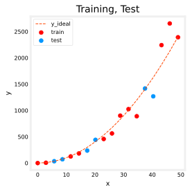
Exercise 1: Error for Regression
When evaluating a linear regression model, you average the squared difference between the predicted values and the target values.
\[ J_\text{test}(\vec{w},b) = \frac{1}{2m_\text{test}}\sum_{i=0}^{m_\text{test}-1} \left( f_{\vec{w},b}(\vec{x}^{(i)}_\text{test}) - y^{(i)}_\text{test} \right)^2 \]
The notebook’s first graded exercise asks you to implement exactly that as a function.
def eval_mse(y, yhat):
"""
Calculate the mean squared error on a data set.
Args:
y : (ndarray Shape (m,) or (m,1)) target value of each example
yhat : (ndarray Shape (m,) or (m,1)) predicted value of each example
Returns:
err: (scalar)
"""
m = len(y)
err = 0.0
for i in range(m):
err_i = (yhat[i] - y[i]) ** 2
err += err_i
err = err / (2 * m)
return errA quick check with two hand-computable values. The differences are \(0.1\) and \(0.1\), so the error should be \(\frac{0.1^2 + 0.1^2}{2 \times 2} = 0.005\).
y_hat = np.array([2.4, 4.2])
y_tmp = np.array([2.3, 4.1])
print(f"mse: {eval_mse(y_hat, y_tmp):0.4f}, expected: 0.0050")mse: 0.0050, expected: 0.0050Comparing Training and Test Performance
Now build a high-degree polynomial model and minimize the training error. The steps are the ones used throughout the course. Create and fit the model (fit is another name for training, running the optimization), compute the error on the training data, and compute the error on the test data.
# create a model in sklearn, train on training data
degree = 10
lmodel = lin_model(degree)
lmodel.fit(X_train, y_train)
# predict on training data, find training error
yhat = lmodel.predict(X_train)
err_train = lmodel.mse(y_train, yhat)
# predict on test data, find error
yhat = lmodel.predict(X_test)
err_test = lmodel.mse(y_test, yhat)
print(f"training err {err_train:0.2f}, test err {err_test:0.2f}")training err 2086.18, test err 21384.05The computed error on the training set is substantially less than the error on the test set, roughly a factor of ten here. The following plot shows why. The model fits the training data very well, and to do so it has created a complex, wiggly function. The test data was not part of the training, and the model does a poor job of predicting on it. This model would be described as (1) overfitting, (2) having high variance, and (3) generalizing poorly.
# plot predictions over data range
x = np.linspace(0, int(X.max()), 100) # predict values for plot
y_pred = lmodel.predict(x).reshape(-1, 1)
plt_train_test(X_train, y_train, X_test, y_test, x, y_pred, x_ideal, y_ideal, degree)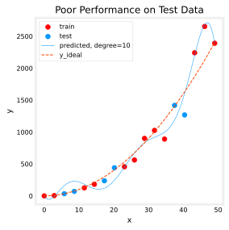
Adding a Cross-Validation Set
The test set error shows this model will not work well on new data. But be careful. If you use the test error to guide improvements to the model, then the model will gradually be tuned to perform well on the test data, and the test data was meant to represent new data. You need yet another set for tuning.
The proposal from the lectures is to separate the data into three groups. The distribution below is typical, though the exact percentages can vary with the amount of data available.
| data | % of total | Description |
|---|---|---|
| training | 60 | Data used to tune model parameters \(w\) and \(b\) in training or fitting |
| cross-validation | 20 | Data used to tune other model choices like degree of polynomial, regularization, or the architecture of a neural network |
| test | 20 | Data used to test the model after tuning to gauge performance on new data |
There is no three-way splitter in scikit-learn, but calling train_test_split twice does the job. The first call carves off the 60% training set; the second call splits the remaining 40% in half, into cross-validation and test sets of 20% each.
# Generate data
X, y, x_ideal, y_ideal = gen_data(40, 5, 0.7)
print("X.shape", X.shape, "y.shape", y.shape)
# split the data using sklearn routine
X_train, X_, y_train, y_ = train_test_split(X, y, test_size=0.40, random_state=1)
X_cv, X_test, y_cv, y_test = train_test_split(X_, y_, test_size=0.50, random_state=1)
print("X_train.shape", X_train.shape, "y_train.shape", y_train.shape)
print("X_cv.shape", X_cv.shape, "y_cv.shape", y_cv.shape)
print("X_test.shape", X_test.shape, "y_test.shape", y_test.shape)X.shape (40,) y.shape (40,)
X_train.shape (24,) y_train.shape (24,)
X_cv.shape (8,) y_cv.shape (8,)
X_test.shape (8,) y_test.shape (8,)fig, ax = plt.subplots(1, 1, figsize=(4, 4))
ax.plot(x_ideal, y_ideal, "--", color="orangered", label="y_ideal", lw=1)
ax.set_title("Training, CV, Test", fontsize=14)
ax.set_xlabel("x")
ax.set_ylabel("y")
ax.scatter(X_train, y_train, color="red", label="train")
ax.scatter(X_cv, y_cv, color=dlc["dlorange"], label="cv")
ax.scatter(X_test, y_test, color=dlc["dlblue"], label="test")
ax.legend(loc="upper left")
plt.show()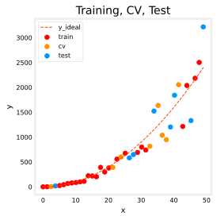
Review Questions
1. Why is it not enough for a model to fit its training data very well?
TipAnswer
The goal of the model is to predict values for new examples it has never seen. A model can fit the training data almost perfectly by memorizing its noise (overfitting) and still predict poorly on new data, which is exactly what the degree-10 model demonstrated with a test error orders of magnitude larger than its training error.
1. You start tuning the polynomial degree by picking whichever degree gives the lowest test error. What is wrong with this, and which set should be used instead?
TipAnswer
Using the test set to make tuning decisions gradually fits those choices to the test data, so the test error stops being an honest estimate of performance on new data. The cross-validation set exists for exactly this purpose. Tune the degree (or \(\lambda\), or the architecture) on the cross-validation set and keep the test set untouched until the very end.
1. In eval_mse, why is the sum divided by \(2m\) rather than \(m\)?
TipAnswer
The course defines the squared error cost with a \(\frac{1}{2}\) factor, which simplifies the calculus (the 2 from differentiating the square cancels it). To stay consistent, the evaluation error keeps the same \(\frac{1}{2m}\) convention, and lin_model.mse likewise divides the scikit-learn mean squared error by 2.
Bias and Variance
Above, it was clear the degree of the polynomial was too high. How can you choose a good value? Comparing training and cross-validation performance provides the guidance. By trying a range of degree values, both errors can be evaluated, and as the degree becomes too large, the cross-validation performance will start to degrade relative to the training performance. This is the diagnosing bias and variance recipe in action.
Finding the Optimal Degree
Train the model repeatedly, increasing the degree of the polynomial each iteration, recording the training error and the cross-validation error each time. The best degree is the one with the lowest cross-validation error, found with np.argmin.
max_degree = 9
err_train = np.zeros(max_degree)
err_cv = np.zeros(max_degree)
x = np.linspace(0, int(X.max()), 100)
y_pred = np.zeros((100, max_degree)) # columns are lines to plot
for degree in range(max_degree):
lmodel = lin_model(degree + 1)
lmodel.fit(X_train, y_train)
yhat = lmodel.predict(X_train)
err_train[degree] = lmodel.mse(y_train, yhat)
yhat = lmodel.predict(X_cv)
err_cv[degree] = lmodel.mse(y_cv, yhat)
y_pred[:, degree] = lmodel.predict(x)
optimal_degree = np.argmin(err_cv) + 1
print("optimal degree by cv error:", optimal_degree)optimal degree by cv error: 2plt.close("all")
plt_optimal_degree(X_train, y_train, X_cv, y_cv, x, y_pred, x_ideal, y_ideal,
err_train, err_cv, optimal_degree, max_degree)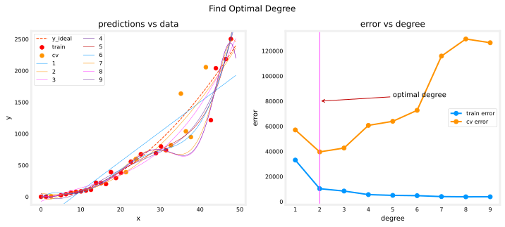
The plots demonstrate that separating data into a trained group and an untrained group reveals underfitting versus overfitting.
- On the left, the solid lines are the predictions of the nine models. The degree-1 model is a straight line that intersects very few points, while the maximum degree hews very closely to every training point.
- On the right, the error on the trained data (blue) decreases as the model complexity increases, as expected. The cross-validation error decreases at first as the model starts to conform to the data, then increases as the model starts to overfit the training data and fails to generalize.
It is worth noting that these curves are not as smooth as one might draw in a lecture. The specific data points assigned to each group can change the results significantly. The general trend is what matters.
Tuning Regularization
The same methodology tunes the regularization parameter \(\lambda\). Start with a deliberately high-degree polynomial (degree 10) and sweep \(\lambda\) from 0 to 100, fitting a regularized model (Ridge) each time.
lambda_range = np.array([0.0, 1e-6, 1e-5, 1e-4, 1e-3, 1e-2, 1e-1, 1, 10, 100])
num_steps = len(lambda_range)
degree = 10
err_train = np.zeros(num_steps)
err_cv = np.zeros(num_steps)
x = np.linspace(0, int(X.max()), 100)
y_pred = np.zeros((100, num_steps)) # columns are lines to plot
for i in range(num_steps):
lambda_ = lambda_range[i]
lmodel = lin_model(degree, regularization=True, lambda_=lambda_)
lmodel.fit(X_train, y_train)
yhat = lmodel.predict(X_train)
err_train[i] = lmodel.mse(y_train, yhat)
yhat = lmodel.predict(X_cv)
err_cv[i] = lmodel.mse(y_cv, yhat)
y_pred[:, i] = lmodel.predict(x)
optimal_reg_idx = np.argmin(err_cv)
print("optimal lambda by cv error:", lambda_range[optimal_reg_idx])optimal lambda by cv error: 1.0plt.close("all")
plt_tune_regularization(X_train, y_train, X_cv, y_cv, x, y_pred,
err_train, err_cv, optimal_reg_idx, lambda_range)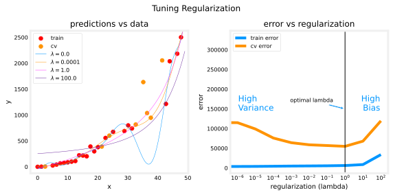
As regularization increases, the model moves from a high variance (overfitting) model on the left of the error plot to a high bias (underfitting) model on the right, exactly the U-shape from the regularization and bias/variance section. The vertical line marks the \(\lambda\) with the lowest cross-validation error.
Increasing the Training Set Size
When a model is overfitting (high variance), collecting additional data can improve performance. The tune_m routine below builds datasets of increasing size \(m\), fits a high-degree (degree 16) polynomial to each, and records both errors, producing a learning curve.
def tune_m():
""" tune the number of examples to reduce overfitting """
m = 50
m_range = np.array(m * np.arange(1, 16))
num_steps = m_range.shape[0]
degree = 16
err_train = np.zeros(num_steps)
err_cv = np.zeros(num_steps)
y_pred = np.zeros((100, num_steps))
for i in range(num_steps):
X, y, x_ideal, y_ideal = gen_data(m_range[i], 5, 0.7)
x = np.linspace(0, int(X.max()), 100)
X_train, X_, y_train, y_ = train_test_split(X, y, test_size=0.40, random_state=1)
X_cv, X_test, y_cv, y_test = train_test_split(X_, y_, test_size=0.50, random_state=1)
lmodel = lin_model(degree) # no regularization
lmodel.fit(X_train, y_train)
yhat = lmodel.predict(X_train)
err_train[i] = lmodel.mse(y_train, yhat)
yhat = lmodel.predict(X_cv)
err_cv[i] = lmodel.mse(y_cv, yhat)
y_pred[:, i] = lmodel.predict(x)
return (X_train, y_train, X_cv, y_cv, x, y_pred, err_train, err_cv, m_range, degree)X_train, y_train, X_cv, y_cv, x, y_pred, err_train, err_cv, m_range, degree = tune_m()
plt_tune_m(X_train, y_train, X_cv, y_cv, x, y_pred, err_train, err_cv, m_range, degree)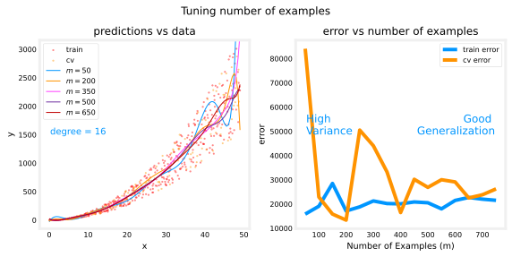
When a model has high variance, adding more examples improves performance. Note the curves on the left plot. The final curve, with the highest value of \(m\), is a smooth curve through the center of the data. On the right, as the number of examples increases, the training and cross-validation performance converge to similar values. The curves are not as smooth as in a lecture, and that is to be expected, but the trend remains clear. More data improves generalization.
Note
Adding more examples when the model has high bias (underfitting) does not improve performance, as the learning curves section showed.
Review Questions
1. In the degree sweep, the training error kept falling as the degree increased, yet the best model was not the highest-degree one. How was the best degree chosen?
TipAnswer
By the cross-validation error, using np.argmin(err_cv). Training error always improves with more model flexibility, so it cannot detect overfitting. The cross-validation error decreases at first, then rises once the model starts fitting noise, and its minimum marks the best trade-off.
1. In the regularization sweep, what happens to the model as \(\lambda\) moves from 0 to 100, in bias/variance terms?
TipAnswer
At \(\lambda = 0\) the degree-10 model is unconstrained and overfits (high variance, training error far below cross-validation error). As \(\lambda\) grows, the weights are pushed toward zero and the model gradually smooths out until, at large \(\lambda\), it underfits (high bias, both errors large). The best \(\lambda\) sits at the bottom of the cross-validation error curve between those extremes.
1. The tune_m experiment used a degree-16 polynomial with no regularization. Why did adding examples help here, and when would it not help?
TipAnswer
A degree-16 polynomial on a small dataset has high variance, and more data constrains a high-variance model, so training and cross-validation errors converge as \(m\) grows. If the model had high bias instead (for example, a straight line fit to this quadratic data), adding examples would not help, because the model cannot represent the underlying curve no matter how much data it sees.
Evaluating a Neural Network
The same tuning ideas apply beyond polynomial regression. This half of the lab works with a neural network on a classification task.
Dataset
The data is six blobs (clusters) of points in two dimensions, generated by scikit-learn’s make_blobs, with the cluster centers placed close enough together that the clusters overlap. Each point’s label \(y \in \{0, 1, \dots, 5\}\) says which cluster it came from, a multiclass classification problem.
def gen_blobs():
classes = 6
m = 800
std = 0.4
centers = np.array([[-1, 0], [1, 0], [0, 1], [0, -1], [-2, 1], [-2, -1]])
X, y = make_blobs(n_samples=m, centers=centers, cluster_std=std, random_state=2, n_features=2)
return (X, y, centers, classes, std)Split it into training, cross-validation, and test sets. In this example the percentage of cross-validation points is increased for emphasis, 50% training, 40% cross-validation, and 10% test.
# Generate and split data set
X, y, centers, classes, std = gen_blobs()
# split the data. Large CV population for demonstration
X_train, X_, y_train, y_ = train_test_split(X, y, test_size=0.50, random_state=1)
X_cv, X_test, y_cv, y_test = train_test_split(X_, y_, test_size=0.20, random_state=1)
print("X_train.shape:", X_train.shape, "X_cv.shape:", X_cv.shape, "X_test.shape:", X_test.shape)X_train.shape: (400, 2) X_cv.shape: (320, 2) X_test.shape: (80, 2)The classification plotting helpers are collapsed below. The interesting one is plot_cat_decision_boundary, which colors the plane by asking the model to predict every point of a fine grid, making the model’s decision boundaries visible, and recat, which classifies a point by which cluster center is nearest, the best possible rule given how the data was generated.
NotePlotting helpers for the classification sections
# cm.Paired has 12 colors, alternating light and dark
dkcolors = plt.cm.Paired((1, 3, 7, 9, 5, 11))
ltcolors = plt.cm.Paired((0, 2, 6, 8, 4, 10))
dkcolors_map = mpl.colors.ListedColormap(dkcolors)
ltcolors_map = mpl.colors.ListedColormap(ltcolors)
def plt_mc_data(ax, X, y, classes, class_labels=None, map=plt.cm.Paired,
legend=False, size=50, m="o"):
normy = mpl.colors.Normalize(vmin=0, vmax=classes)
for i in range(classes):
idx = np.where(y == i)
label = class_labels[i] if class_labels else "c{}".format(i)
ax.scatter(X[idx, 0], X[idx, 1], marker=m, color=map(normy(i)),
s=size, label=label)
if legend: ax.legend(loc="lower right")
ax.axis("equal")
def plot_cat_decision_boundary(ax, X, predict, class_labels=None, legend=False,
vector=True, color="g", lw=1):
# create a mesh of points to plot
pad = 0.5
x_min, x_max = X[:, 0].min() - pad, X[:, 0].max() + pad
y_min, y_max = X[:, 1].min() - pad, X[:, 1].max() + pad
h = max(x_max - x_min, y_max - y_min) / 200
xx, yy = np.meshgrid(np.arange(x_min, x_max, h),
np.arange(y_min, y_max, h))
points = np.c_[xx.ravel(), yy.ravel()]
# make predictions for each point in mesh
if vector:
Z = predict(points)
else:
Z = np.zeros((len(points),))
for i in range(len(points)):
Z[i] = predict(points[i].reshape(1, 2))
Z = Z.reshape(xx.shape)
# contour plot highlights boundaries between values - classes in this case
ax.contour(xx, yy, Z, colors=color, linewidths=lw)
ax.axis("tight")
def recat(pt, origins):
""" categorize a point based on distance from origin of clusters """
nclusters = len(origins)
min_dist = 10000
y_new = None
for j in range(nclusters):
temp = origins[j] - pt.reshape(2,)
dist = np.sqrt(np.dot(temp.T, temp))
if dist < min_dist:
y_new = j
min_dist = dist
return y_new
def plt_train_eq_dist(X_train, y_train, classes, X_cv, y_cv, centers, std):
css = np.unique(y_train)
fig, ax = plt.subplots(1, 2, figsize=(9.5, 4), layout="constrained")
plt_mc_data(ax[0], X_train, y_train, classes, map=dkcolors_map, legend=False, size=50)
plt_mc_data(ax[0], X_cv, y_cv, classes, map=ltcolors_map, legend=False, m="<")
ax[0].set_title("Training (dots), CV (triangles)")
for c in css:
circ = plt.Circle(centers[c], 2 * std, color=dkcolors_map(c),
clip_on=False, fill=False, lw=0.5)
ax[0].add_patch(circ)
# make a model for plotting routines to call
cat_predict = lambda pt: recat(pt.reshape(1, 2), centers)
plot_cat_decision_boundary(ax[1], X_train, cat_predict, vector=False,
color=dlc["dlmagenta"], lw=0.75)
ax[1].set_title("ideal performance", fontsize=14)
# add the original data to the decision boundary
plt_mc_data(ax[1], X_train, y_train, classes, map=dkcolors_map, legend=False, size=50)
ax[1].set_xlabel("x0"); ax[1].set_ylabel("x1")
handles, labels = ax[1].get_legend_handles_labels()
fig.legend(handles, labels, loc="outside right center", fontsize=9)
plt.show()
def plt_nn(model_predict, X_train, y_train, classes, X_cv, y_cv, suptitle=""):
# plot the decision boundary
fig, ax = plt.subplots(1, 2, figsize=(9.5, 4), layout="constrained")
plot_cat_decision_boundary(ax[0], X_train, model_predict, vector=True)
ax[0].set_title("training data (dots)", fontsize=14)
plt_mc_data(ax[0], X_train, y_train, classes, map=dkcolors_map, legend=False, size=75)
ax[0].set_xlabel("x0"); ax[0].set_ylabel("x1")
plot_cat_decision_boundary(ax[1], X_train, model_predict, vector=True)
ax[1].set_title("cross-validation data (triangles)", fontsize=14)
plt_mc_data(ax[1], X_cv, y_cv, classes, map=ltcolors_map, legend=False, size=100, m="<")
ax[1].set_xlabel("x0"); ax[1].set_ylabel("x1")
fig.suptitle(suptitle, fontsize=12)
handles, labels = ax[0].get_legend_handles_labels()
fig.legend(handles, labels, loc="outside right center", fontsize=9)
plt.show()
def plot_iterate(lambdas, models, X_train, y_train, X_cv, y_cv):
err_train = np.zeros(len(lambdas))
err_cv = np.zeros(len(lambdas))
for i in range(len(models)):
err_train[i] = eval_cat_err(y_train, np.argmax(models[i](X_train), axis=1))
err_cv[i] = eval_cat_err(y_cv, np.argmax(models[i](X_cv), axis=1))
fig, ax = plt.subplots(1, 1, figsize=(6, 4))
ax.set_title("error vs regularization", fontsize=12)
ax.plot(lambdas, err_train, marker="o", label="train error", color=dlc["dlblue"])
ax.plot(lambdas, err_cv, marker="o", label="cv error", color=dlc["dlorange"])
ax.set_xscale("log")
ax.set_ylim(*ax.get_ylim())
ax.set_xlabel("Regularization (lambda)", fontsize=14)
ax.set_ylabel("Error", fontsize=14)
ax.legend()
fig.suptitle("Tuning Regularization", fontsize=14)
ax.text(0.05, 0.14, "Training Error\nlower than CV", fontsize=12, ha="left",
transform=ax.transAxes, color=dlc["dlblue"])
ax.text(0.95, 0.14, "Similar\nTraining, CV", fontsize=12, ha="right",
transform=ax.transAxes, color=dlc["dlblue"])
plt.show()
def plt_compare(X, y, classes, simple, regularized, centers):
plt.close("all")
fig, ax = plt.subplots(1, 3, figsize=(9.5, 3), layout="constrained")
# plt simple
plot_cat_decision_boundary(ax[0], X, simple, vector=True)
ax[0].set_title("Simple Model", fontsize=14)
plt_mc_data(ax[0], X, y, classes, map=dkcolors_map, legend=False, size=75)
ax[0].set_xlabel("x0"); ax[0].set_ylabel("x1")
# plt regularized
plot_cat_decision_boundary(ax[1], X, regularized, vector=True)
ax[1].set_title("Regularized Model", fontsize=14)
plt_mc_data(ax[1], X, y, classes, map=dkcolors_map, legend=False, size=75)
ax[1].set_xlabel("x0")
# plt ideal
cat_predict = lambda pt: recat(pt.reshape(1, 2), centers)
plot_cat_decision_boundary(ax[2], X, cat_predict, vector=False)
ax[2].set_title("Ideal Model", fontsize=14)
plt_mc_data(ax[2], X, y, classes, map=dkcolors_map, legend=False, size=75)
ax[2].set_xlabel("x0")
handles, labels = ax[0].get_legend_handles_labels()
fig.legend(handles, labels, loc="outside right center", fontsize=9)
err_s = eval_cat_err(y, simple(X))
err_r = eval_cat_err(y, regularized(X))
ax[0].text(0.03, 0.97, f"err_test={err_s:0.2f}", transform=ax[0].transAxes, va="top", fontsize=10)
ax[1].text(0.03, 0.97, f"err_test={err_r:0.2f}", transform=ax[1].transAxes, va="top", fontsize=10)
m = len(X)
y_eq = np.zeros(m)
for i in range(m):
y_eq[i] = recat(X[i], centers)
err_eq = eval_cat_err(y, y_eq)
ax[2].text(0.03, 0.97, f"err_test={err_eq:0.2f}", transform=ax[2].transAxes, va="top", fontsize=10)
plt.show()plt_train_eq_dist(X_train, y_train, classes, X_cv, y_cv, centers, std)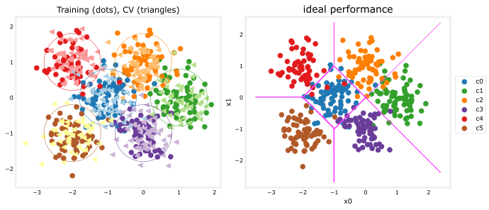
On the left is the data. There are six clusters identified by color, with training points shown as dots and cross-validation points as triangles. The interesting points are those in ambiguous locations where either cluster might claim them. What would you expect a neural network model to do with those? What would be an example of overfitting here? Of underfitting?
On the right is an example of an “ideal” model, one built knowing exactly how the data was generated. Its lines are equal-distance boundaries between cluster centers. Because the clusters genuinely overlap, even this ideal model misclassifies roughly 8% of the points. That number is a baseline in the sense of the baseline performance section. No trainable model should be expected to beat it honestly.
Exercise 2: Error for Classification
For a categorical model, the evaluation is simply the fraction of incorrect predictions.
\[ J_{cv} = \frac{1}{m}\sum_{i=0}^{m-1} \begin{cases} 1, & \text{if } \hat{y}^{(i)} \neq y^{(i)}\\ 0, & \text{otherwise} \end{cases} \]
The second graded exercise implements it. Note that in this lab, target values are the index of the category (0 through 5) and are not one-hot encoded.
def eval_cat_err(y, yhat):
"""
Calculate the categorization error
Args:
y : (ndarray Shape (m,) or (m,1)) target value of each example
yhat : (ndarray Shape (m,) or (m,1)) predicted value of each example
Returns:
cerr: (scalar)
"""
m = len(y)
incorrect = 0
for i in range(m):
if yhat[i] != y[i]:
incorrect += 1
cerr = incorrect / m
return cerry_hat = np.array([1, 2, 0])
y_tmp = np.array([1, 2, 3])
print(f"categorization error {np.squeeze(eval_cat_err(y_hat, y_tmp)):0.3f}, expected:0.333")
y_hat = np.array([[1], [2], [0], [3]])
y_tmp = np.array([[1], [2], [1], [3]])
print(f"categorization error {np.squeeze(eval_cat_err(y_hat, y_tmp)):0.3f}, expected:0.250")categorization error 0.333, expected:0.333
categorization error 0.250, expected:0.250Review Questions
1. Even the “ideal” equal-distance model misclassifies about 8% of this dataset. What does that number represent, and what does it imply for the neural networks trained next?
TipAnswer
It is the baseline level of performance for this problem. The clusters genuinely overlap, so some points are simply closer to another cluster’s center than their own; no honest model can resolve them. A trained model with error near 8% on unseen data is doing about as well as possible, and a model with training error far below 8% is likely memorizing noise, that is, overfitting.
1. eval_cat_err differs from eval_mse in more than the formula. Why does squared error make no sense for this classification task?
TipAnswer
The labels 0 through 5 are category indices, not quantities. Predicting cluster 5 when the truth is cluster 0 is not “five times worse” than predicting cluster 1; both are simply wrong. So the sensible measure is the fraction of predictions that are incorrect, which is what eval_cat_err computes.
Model Complexity
Now build two neural networks, a complex model and a simple model, and evaluate whether each is likely to overfit or underfit.
Exercise 3: Complex Model
The third graded exercise composes a three-layer model.
- Dense layer with 120 units, relu activation
- Dense layer with 40 units, relu activation
- Dense layer with 6 units and a linear activation (not softmax)
It is compiled with SparseCategoricalCrossentropy loss using from_logits=True and the Adam optimizer with a learning rate of 0.01. This is the numerically stable pattern from the multiclass classification page, where the output layer produces raw scores (logits) and the softmax is folded into the loss. “Sparse” refers to the labels being category indices rather than one-hot vectors.
tf.random.set_seed(1234)
model = Sequential(
[
Dense(120, activation="relu", name="L1"),
Dense(40, activation="relu", name="L2"),
Dense(6, activation="linear", name="L3"),
], name="Complex"
)
model.compile(
loss=tf.keras.losses.SparseCategoricalCrossentropy(from_logits=True),
optimizer=tf.keras.optimizers.Adam(learning_rate=0.01),
)
model.fit(X_train, y_train, epochs=1000, verbose=0) # verbose=0 hides 1000 progress lines
model.summary()Model: "Complex"
┏━━━━━━━━━━━━━━━━━━━━━━━━━━━━━━━━━┳━━━━━━━━━━━━━━━━━━━━━━━━┳━━━━━━━━━━━━━━━┓ ┃ Layer (type) ┃ Output Shape ┃ Param # ┃ ┡━━━━━━━━━━━━━━━━━━━━━━━━━━━━━━━━━╇━━━━━━━━━━━━━━━━━━━━━━━━╇━━━━━━━━━━━━━━━┩ │ L1 (Dense) │ (None, 120) │ 360 │ ├─────────────────────────────────┼────────────────────────┼───────────────┤ │ L2 (Dense) │ (None, 40) │ 4,840 │ ├─────────────────────────────────┼────────────────────────┼───────────────┤ │ L3 (Dense) │ (None, 6) │ 246 │ └─────────────────────────────────┴────────────────────────┴───────────────┘
Total params: 16,340 (127.66 KB)
Trainable params: 5,446 (42.55 KB)
Non-trainable params: 0 (0.00 B)
Optimizer params: 10,894 (85.11 KB)
With 2 inputs, the layer sizes give \(2 \times 120 + 120 = 360\), then \(120 \times 40 + 40 = 4840\), then \(40 \times 6 + 6 = 246\) parameters, 5,446 in total, a lot of capacity for 400 training points.
To turn the model’s logits into class predictions, apply softmax and take the class with the highest probability using np.argmax.
# make a model for plotting routines to call
model_predict = lambda Xl: np.argmax(tf.nn.softmax(model.predict(Xl, verbose=0)).numpy(), axis=1)
plt_nn(model_predict, X_train, y_train, classes, X_cv, y_cv, suptitle="Complex Model")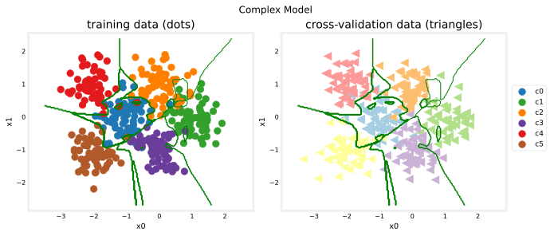
This model has worked very hard to capture the outliers of each category, carving intricate islands into the decision boundary. As a result it has miscategorized some of the cross-validation data. The classification errors make it concrete.
training_cerr_complex = eval_cat_err(y_train, model_predict(X_train))
cv_cerr_complex = eval_cat_err(y_cv, model_predict(X_cv))
print(f"categorization error, training, complex model: {training_cerr_complex:0.3f}")
print(f"categorization error, cv, complex model: {cv_cerr_complex:0.3f}")categorization error, training, complex model: 0.007
categorization error, cv, complex model: 0.097Exercise 4: Simple Model
Now compose a two-layer model.
- Dense layer with 6 units, relu activation
- Dense layer with 6 units and a linear activation
It is compiled the same way as the complex model.
tf.random.set_seed(1234)
model_s = Sequential(
[
Dense(6, activation="relu", name="L1"),
Dense(6, activation="linear", name="L2"),
], name="Simple"
)
model_s.compile(
loss=tf.keras.losses.SparseCategoricalCrossentropy(from_logits=True),
optimizer=tf.keras.optimizers.Adam(learning_rate=0.01),
)
model_s.fit(X_train, y_train, epochs=1000, verbose=0)
model_s.summary()Model: "Simple"
┏━━━━━━━━━━━━━━━━━━━━━━━━━━━━━━━━━┳━━━━━━━━━━━━━━━━━━━━━━━━┳━━━━━━━━━━━━━━━┓ ┃ Layer (type) ┃ Output Shape ┃ Param # ┃ ┡━━━━━━━━━━━━━━━━━━━━━━━━━━━━━━━━━╇━━━━━━━━━━━━━━━━━━━━━━━━╇━━━━━━━━━━━━━━━┩ │ L1 (Dense) │ (None, 6) │ 18 │ ├─────────────────────────────────┼────────────────────────┼───────────────┤ │ L2 (Dense) │ (None, 6) │ 42 │ └─────────────────────────────────┴────────────────────────┴───────────────┘
Total params: 182 (1.42 KB)
Trainable params: 60 (480.00 B)
Non-trainable params: 0 (0.00 B)
Optimizer params: 122 (976.00 B)
This model has only \(2 \times 6 + 6 = 18\) plus \(6 \times 6 + 6 = 42\), so 60 parameters, roughly ninety times fewer than the complex model.
# make a model for plotting routines to call
model_predict_s = lambda Xl: np.argmax(tf.nn.softmax(model_s.predict(Xl, verbose=0)).numpy(), axis=1)
plt_nn(model_predict_s, X_train, y_train, classes, X_cv, y_cv, suptitle="Simple Model")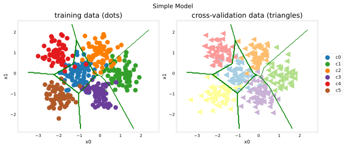
The simple model does pretty well, drawing smooth, nearly straight boundaries between the clusters. Compare the errors side by side.
training_cerr_simple = eval_cat_err(y_train, model_predict_s(X_train))
cv_cerr_simple = eval_cat_err(y_cv, model_predict_s(X_cv))
print(f"categorization error, training, simple model, {training_cerr_simple:0.3f}, complex model: {training_cerr_complex:0.3f}")
print(f"categorization error, cv, simple model, {cv_cerr_simple:0.3f}, complex model: {cv_cerr_complex:0.3f}")categorization error, training, simple model, 0.070, complex model: 0.007
categorization error, cv, simple model, 0.075, complex model: 0.097The simple model has somewhat higher classification error on the training data but does better on the cross-validation data than the more complex model, the signature of the complex model overfitting.
Review Questions
1. The complex model beats the simple model on training error but loses on cross-validation error. In bias/variance terms, what is going on?
TipAnswer
The complex model has high variance. Its 5,446 parameters give it enough capacity to bend its decision boundary around individual training points, including noisy overlap points, so its training error is very low but the contorted boundary misclassifies more unseen cross-validation points. The simple model, with 60 parameters, cannot chase outliers, so it generalizes better here.
1. Why does the output layer use a linear activation instead of softmax, given that this is a softmax classification problem?
TipAnswer
This is the numerically stable pattern. The layer outputs raw scores (logits), and SparseCategoricalCrossentropy(from_logits=True) applies the softmax inside the loss computation, which avoids round-off problems. At prediction time, tf.nn.softmax is applied explicitly to convert logits to probabilities before taking np.argmax.
Regularization
As in the polynomial case, regularization can moderate the impact of a complex model. The fifth graded exercise reconstructs the complex model with an L2 penalty on the two hidden layers. In Keras, kernel_regularizer=tf.keras.regularizers.l2(0.1) adds \(\lambda \sum w_j^2\) to the loss for that layer’s weights, with \(\lambda = 0.1\).
tf.random.set_seed(1234)
model_r = Sequential(
[
Dense(120, activation="relu", kernel_regularizer=tf.keras.regularizers.l2(0.1), name="L1"),
Dense(40, activation="relu", kernel_regularizer=tf.keras.regularizers.l2(0.1), name="L2"),
Dense(6, activation="linear", name="L3"),
], name="ComplexRegularized"
)
model_r.compile(
loss=tf.keras.losses.SparseCategoricalCrossentropy(from_logits=True),
optimizer=tf.keras.optimizers.Adam(learning_rate=0.01),
)
model_r.fit(X_train, y_train, epochs=1000, verbose=0)
model_r.summary()Model: "ComplexRegularized"
┏━━━━━━━━━━━━━━━━━━━━━━━━━━━━━━━━━┳━━━━━━━━━━━━━━━━━━━━━━━━┳━━━━━━━━━━━━━━━┓ ┃ Layer (type) ┃ Output Shape ┃ Param # ┃ ┡━━━━━━━━━━━━━━━━━━━━━━━━━━━━━━━━━╇━━━━━━━━━━━━━━━━━━━━━━━━╇━━━━━━━━━━━━━━━┩ │ L1 (Dense) │ (None, 120) │ 360 │ ├─────────────────────────────────┼────────────────────────┼───────────────┤ │ L2 (Dense) │ (None, 40) │ 4,840 │ ├─────────────────────────────────┼────────────────────────┼───────────────┤ │ L3 (Dense) │ (None, 6) │ 246 │ └─────────────────────────────────┴────────────────────────┴───────────────┘
Total params: 16,340 (127.66 KB)
Trainable params: 5,446 (42.55 KB)
Non-trainable params: 0 (0.00 B)
Optimizer params: 10,894 (85.11 KB)
The parameter count is identical to the unregularized complex model, 5,446. Regularization does not remove capacity; it discourages the weights from using it to chase noise.
# make a model for plotting routines to call
model_predict_r = lambda Xl: np.argmax(tf.nn.softmax(model_r.predict(Xl, verbose=0)).numpy(), axis=1)
plt_nn(model_predict_r, X_train, y_train, classes, X_cv, y_cv, suptitle="Regularized")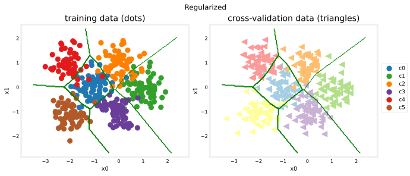
The results look very similar to the ideal model’s boundaries. Check the classification error of all three models.
training_cerr_reg = eval_cat_err(y_train, model_predict_r(X_train))
cv_cerr_reg = eval_cat_err(y_cv, model_predict_r(X_cv))
test_cerr_reg = eval_cat_err(y_test, model_predict_r(X_test))
print(f"categorization error, training, regularized: {training_cerr_reg:0.3f}, simple model, {training_cerr_simple:0.3f}, complex model: {training_cerr_complex:0.3f}")
print(f"categorization error, cv, regularized: {cv_cerr_reg:0.3f}, simple model, {cv_cerr_simple:0.3f}, complex model: {cv_cerr_complex:0.3f}")categorization error, training, regularized: 0.077, simple model, 0.070, complex model: 0.007
categorization error, cv, regularized: 0.097, simple model, 0.075, complex model: 0.097The regularized model and the simple model land close together, and both leave the unregularized complex model far behind on the cross-validation set. The exact decimals shift a little between training runs and library versions, but the lesson is stable. Shrinking the network and regularizing the large one are both effective cures for the overfitting, and the regularized model achieves it while keeping all of its capacity.
Finding the Optimal Regularization Value
As with the polynomial, you can sweep a range of regularization values and let the cross-validation error pick the winner. This trains seven full models, so it is the slowest cell of the lab; the original notebook warns it takes several minutes.
tf.random.set_seed(1234)
lambdas = [0.0, 0.001, 0.01, 0.05, 0.1, 0.2, 0.3]
models = [None] * len(lambdas)
for i in range(len(lambdas)):
lambda_ = lambdas[i]
models[i] = Sequential(
[
Dense(120, activation="relu", kernel_regularizer=tf.keras.regularizers.l2(lambda_)),
Dense(40, activation="relu", kernel_regularizer=tf.keras.regularizers.l2(lambda_)),
Dense(classes, activation="linear"),
]
)
models[i].compile(
loss=tf.keras.losses.SparseCategoricalCrossentropy(from_logits=True),
optimizer=tf.keras.optimizers.Adam(0.01),
)
models[i].fit(X_train, y_train, epochs=1000, verbose=0)
print(f"Finished lambda = {lambda_}")Finished lambda = 0.0
Finished lambda = 0.001
Finished lambda = 0.01
Finished lambda = 0.05
Finished lambda = 0.1
Finished lambda = 0.2
Finished lambda = 0.3plot_iterate(lambdas, models, X_train, y_train, X_cv, y_cv)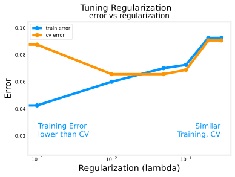
As regularization is increased, the performance of the model on the training and cross-validation datasets converge, the same pattern seen when tuning \(\lambda\) for the polynomial. For this dataset and model, the cross-validation error bottoms out near \(\lambda = 0.05\), right where the training and cross-validation error curves meet.
Test Set Comparison
The cross-validation set did all the tuning work, so the test set is still untouched and can give an honest final verdict. Compare the optimized models against the ideal performance on the held-out test data.
plt_compare(X_test, y_test, classes, model_predict_s, model_predict_r, centers)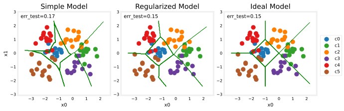
The test set is small (80 points) and appears to contain a number of outliers, so the classification errors run high for every model, including the ideal one. What matters is the comparison. The performance of the optimized models is close to the ideal performance, which is as good as it gets on data with genuinely overlapping classes.
Review Questions
1. The final comparison was done on the test set rather than the cross-validation set. Why does that matter?
TipAnswer
Every tuning decision, the architecture comparison and the choice of \(\lambda\), was made by looking at cross-validation error, so the cross-validation set has effectively been “used up” and gives an optimistic estimate. The test set played no role in any decision, so its error is an honest estimate of performance on genuinely new data.
1. In the \(\lambda\) sweep, what happens to the gap between training error and cross-validation error as \(\lambda\) increases, and what does that signify?
TipAnswer
The gap shrinks and the two errors converge. A large gap (training error much lower than cross-validation error) is the signature of high variance; increasing regularization restrains the weights, trading a little training performance for better generalization, until training and cross-validation errors are similar.
1. Regularizing the complex model kept all 5,446 parameters, yet it stopped overfitting. How is that different from what the simple model did?
TipAnswer
The simple model removed capacity outright, only 60 parameters, so it physically cannot draw intricate boundaries. The regularized model keeps its capacity but pays a penalty of \(\lambda \sum w_j^2\) for large weights, so training drives the weights to use that capacity only where the data genuinely supports it. As the lectures noted, a larger regularized network is usually the better option, since it can still model fine structure where it is real.
What This Lab Showed
You have exercised the important tools for evaluating and improving machine learning models.
- Splitting data into trained and untrained sets lets you tell overfitting apart from underfitting.
- Creating three datasets, training, cross-validation, and test, lets you train parameters \(\vec{w}, b\) with the training set, tune model choices such as complexity, regularization, and number of examples with the cross-validation set, and evaluate real-world performance with the untouched test set.
- Comparing training versus cross-validation performance reveals a model’s tendency to overfit (high variance) or underfit (high bias), which in turn tells you what to try next, exactly the decision process from the machine learning development process.